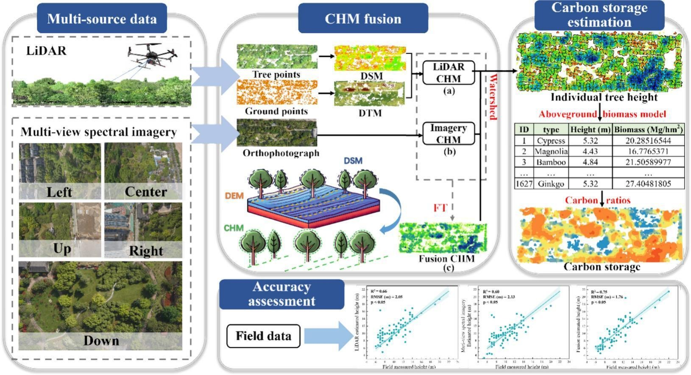
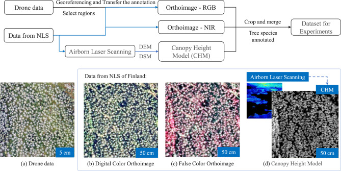
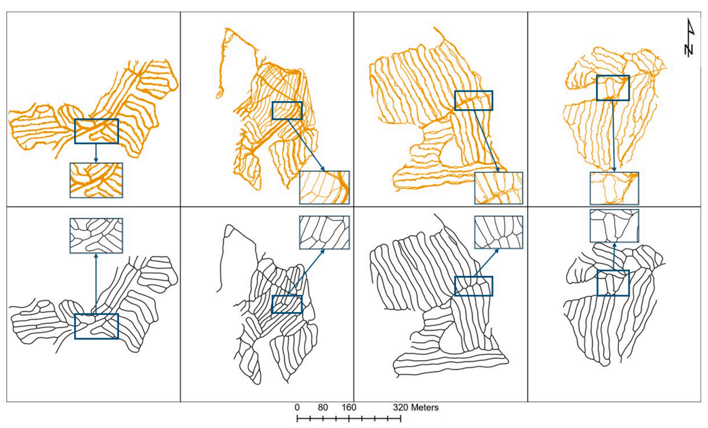
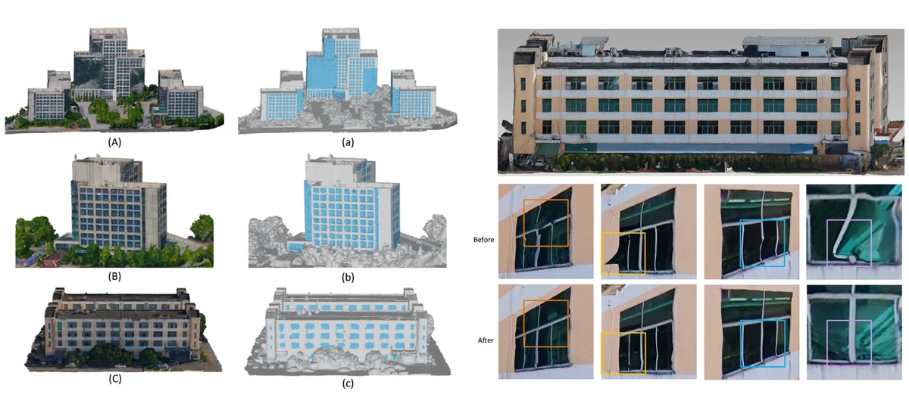
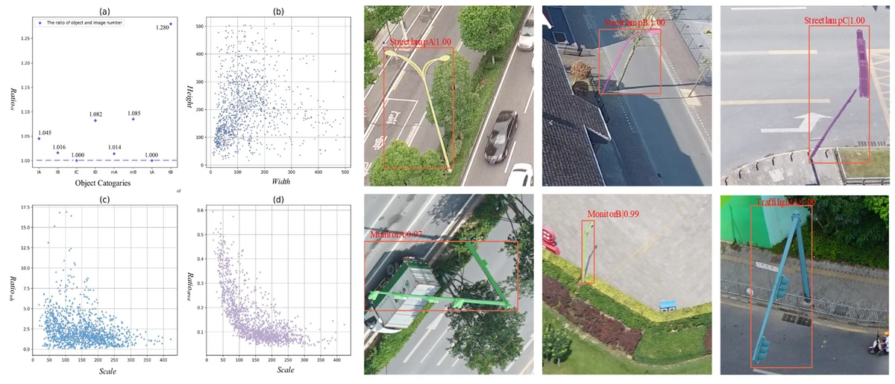
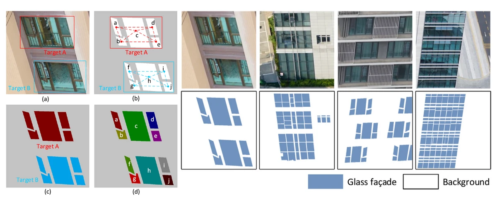

Zhu Mao (毛竹)
Postdoctoral Researcher | Department of Forest Sciences, University of Helsinki
Postdoctoral Researcher | Department of Forest Sciences, University of Helsinki
Postdoctoral Researcher in the Forest Technology Group, Department of Forest Sciences, University of Helsinki. My research focuses on forest precision harvesting, deep learning and artificial intelligence in forestry, photogrammetry and remote sensing, 3D modeling.
Ph.D. in Photogrammetry and Remote Sensing
M.Eng. in Surveying and Mapping Engineering
B.Sc. in Geographic Information System






 ORCID
ORCID